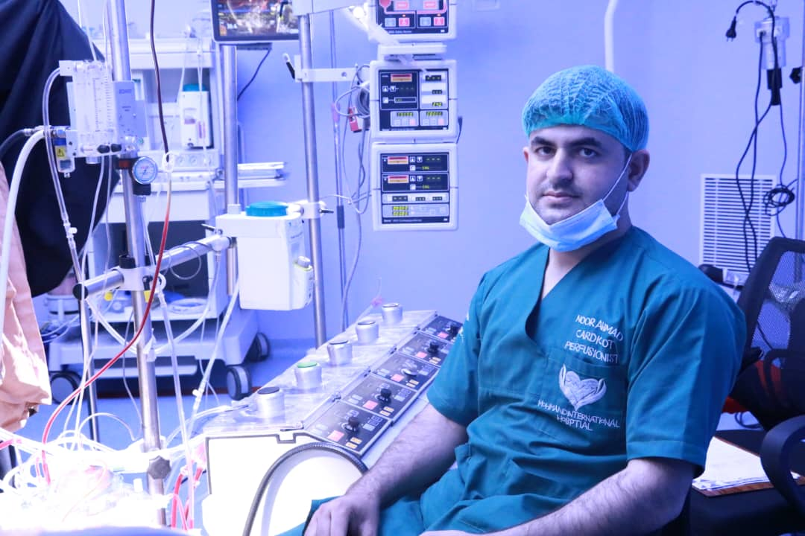

Cardiovascular Perfusion • Cardiac Surgery • Cardiopulmonary Bypass
Afghanistan
I am Noor Ahmad Popal, a Clinical Cardiovascular Perfusionist with five years of professional experience in cardiovascular perfusion and cardiac surgery.
My professional work has focused on cardiopulmonary bypass, cardiac surgery support, perfusion technology, patient monitoring and safe conduct of extracorporeal circulation.
I have worked in reputable hospitals in Afghanistan and have participated in congenital heart surgery, valve surgery and coronary artery bypass procedures.
I have experience working with national and international cardiac surgeons and multidisciplinary cardiac surgery teams.
زه نوراحمد پوپل یم، Clinical Cardiovascular Perfusionist یم او د Cardiovascular Perfusion په برخه کې پنځه کلنه مسلکي کاري تجربه لرم.
زما مسلکي کار د Cardiopulmonary Bypass، د زړه د عملیاتو ملاتړ، Perfusion Technology، د ناروغ څارنه او د Extracorporeal Circulation خوندي مدیریت باندې تمرکز لري.
ما د افغانستان په معتبرو روغتونونو کې کار کړی او د مورزادي زړه ناروغیو، د زړه د Valve عملیاتو او Coronary Artery Bypass عملیاتو کې مې د Perfusion تجربه ترلاسه کړې ده.
ما له داخلي او بهرنیو Cardiac Surgeons او Multidisciplinary Cardiac Surgery Teams سره کار کړی دی.
Clinical Cardiovascular Perfusion / Cardiac Surgery
Cardiovascular Perfusion and Cardiac Surgery
Cardiac & Thoracic Department
Clinical Cardiovascular Perfusion
د CPB Machine چلول، Circuit Setup، Oxygenator Setup، Priming، Anticoagulation، ACT Monitoring، Cardioplegia Management، Temperature Management، ABG Monitoring، Perfusion Monitoring او له CPB څخه د ناروغ د Weaning په پروسه کې عملي تجربه لرم.
د مورزادي زړه ناروغیو په برخه کې مې د ASD، VSD، TOF، AV Canal Defect، Pulmonary Stenosis، Central Shunt او نورو اړوندو عملیاتو د Perfusion تجربه ترلاسه کړې ده.
د Mitral Valve او Aortic Valve Replacement او له CABG سره د ګډو Valve Operations په Perfusion کې تجربه لرم.
د Coronary Artery Disease ناروغانو د CABG عملیاتو پر مهال د Cardiopulmonary Bypass په مدیریت کې تجربه لرم.
Advanced Heart-Lung Machine used for cardiopulmonary bypass.
Heart-Lung Machine used in cardiac surgery and extracorporeal circulation.
Cardiopulmonary Bypass Machine used for cardiac surgical procedures.
ما د Stockert S5، Stockert S3 او Sarns 8000 CPB Machines سره د Cardiopulmonary Bypass په برخه کې عملي کار کړی دی.
An oxygenator is a major component of the CPB circuit. It provides gas exchange by adding oxygen to the blood and removing carbon dioxide.
Selection should consider patient size, body surface area, expected blood flow, oxygenator specifications and the overall CPB circuit.
Oxygenator د CPB Circuit یوه مهمه برخه ده چې د سږو په څېر د Gas Exchange دنده ترسره کوي؛ وینې ته Oxygen ورکوي او Carbon Dioxide ترې لرې کوي.
د Oxygenator انتخاب باید د ناروغ وزن، BSA، د اړتیا وړ Blood Flow، د Oxygenator مشخصاتو او د CPB Circuit له جوړښت سره برابر وي.
Graduate of Nursing
Graduate of Anesthesia Program
Graduate of Pharmacy Program
Current Medical Student
د نرسنګ له څانګې څخه فارغ یم، د انستیزیا او فارمسي په برخو کې مې زده کړې بشپړې کړې دي، او اوس د طب پوهنځي برحاله محصل یم.
زه د معتبرو روغتونونو څخه Professional Certificates، Recommendation Letters، Appreciation Certificates او نور اړوند مسلکي اسناد لرم.
Cardiopulmonary Bypass is a system that temporarily supports circulation and gas exchange during cardiac surgery. It allows the surgical team to operate on the heart while maintaining systemic perfusion.
CPB هغه سیستم دی چې د زړه د عملیاتو پر مهال د وینې دوران او Gas Exchange په موقتي ډول د Heart-Lung Machine په وسیله ملاتړ کوي، څو جراح وکولای شي پر زړه عملیات ترسره کړي.
Priming is the preparation of the CPB circuit before connecting it to the patient. The circuit is filled with an appropriate solution and carefully de-aired.
Prime composition depends on patient age, weight, BSA, hematocrit, procedure and institutional protocol.
Priming د ناروغ سره د CPB Circuit له وصل کېدو مخکې د Circuit چمتو کول دي. Circuit د مناسب محلول په وسیله ډکېږي او له هوا څخه پاکېږي.
د Prime ترکیب د ناروغ عمر، وزن، BSA، Hematocrit، د عملیاتو ډول او د روغتون د Protocol مطابق ټاکل کېږي.
A CPB circuit may include a venous reservoir, pump, oxygenator, arterial line, venous line, filters, sampling lines, pressure monitoring and temperature monitoring.
CPB Circuit عموماً Venous Reservoir، Pump، Oxygenator، Arterial Line، Venous Line، Filters، Sampling Lines، Pressure Monitoring او Temperature Monitoring برخې لري.
Cardioplegia is used to achieve controlled cardiac arrest and provide myocardial protection during cardiac surgery.
Cardioplegia strategies may include blood or crystalloid solutions and may be delivered antegrade, retrograde or by a combined approach.
Temperature strategies may include cold, tepid or warm cardioplegia. Single-dose and multidose strategies are also used depending on the clinical situation.
Cardioplegia د زړه د کنټرول شوي موقتي توقف او د Myocardium د ساتنې لپاره کارول کېږي.
Cardioplegia د Blood یا Crystalloid پر بنسټ کېدای شي او Antegrade، Retrograde یا Combined ډول ورکول کېدای شي.
د Temperature له مخې Cold، Tepid او Warm Cardioplegia کارېدلی شي. Single-dose او Multi-dose ستراتیژۍ هم د عملیاتو او ناروغ د حالت مطابق کارول کېږي.
Cannulation establishes vascular access for CPB.
Arterial cannulation delivers oxygenated blood from the CPB circuit to the patient. Venous cannulation drains venous blood from the patient to the CPB circuit.
Cannulation د CPB لپاره د وینې رګونو ته د مناسب Cannula داخلول او د CPB Circuit سره یې وصلول دي.
Arterial Cannula اکسیجن لرونکې وینه ناروغ ته انتقالوي، او Venous Cannula د ناروغ Venous Blood د CPB Circuit ته راوباسي.
Cardiac vents may be used to manage blood and air within cardiac chambers, reduce ventricular distension and improve the surgical field when clinically appropriate.
Venting د زړه له Chamberونو څخه د وینې او هوا د مدیریت لپاره کارول کېږي. مناسب Venting د Ventricular Distension په کمولو او د Surgical Field په ښه کولو کې مرسته کوي.
Anticoagulation is necessary during CPB to reduce clot formation within the extracorporeal circuit. Heparin is commonly used, while ACT is an important monitoring method.
د CPB پر مهال د Extracorporeal Circuit دننه د Clot د جوړېدو د مخنیوي لپاره Anticoagulation ضروري ده. Heparin عموماً کارول کېږي او ACT د څارنې یوه مهمه وسیله ده.
Arterial Blood Gas analysis helps assess oxygenation, ventilation, acid-base balance and electrolytes.
Interpretation should consider temperature, FiO₂, sweep gas, pump flow, hemoglobin and clinical condition.
ABG د Oxygenation، Ventilation، Acid-Base Balance او Electrolytes د ارزونې لپاره مهم دی.
د ABG نتیجه باید د Temperature، FiO₂، Sweep Gas، Pump Flow، Hemoglobin او د ناروغ له Clinical Condition سره یو ځای تفسیر شي.
The oxygenator requires an appropriate gas supply for effective gas exchange. Oxygen concentration and sweep gas are adjusted according to blood gas results and clinical requirements.
Oxygenator د مناسب Gas Supply اړتیا لري. Oxygen concentration او Sweep Gas د ABG، Oxygenation، CO₂ او د ناروغ د Clinical اړتیا مطابق تنظیمېږي.
Oxygen delivery represents the amount of oxygen delivered to tissues per unit time. It depends mainly on cardiac or pump flow and arterial oxygen content.
Hemoglobin, oxygen saturation and blood flow are important components of oxygen delivery.
DO₂ نسجونو ته د اکسیجن د انتقال مهم شاخص دی. د Oxygen Delivery په اندازه کې Pump Flow او Arterial Oxygen Content مهم رول لري.
Hemoglobin، Oxygen Saturation او Blood Flow د Oxygen Delivery مهم عوامل دي.
Controlled cooling and rewarming are important components of CPB management. Temperature should be monitored continuously and managed carefully.
Controlled Cooling او Rewarming د CPB د مدیریت مهمې برخې دي. Temperature باید په منظم ډول وڅارل شي او په احتیاط سره مدیریت شي.
Hemoconcentration and ultrafiltration can help manage fluid balance, hematocrit and excess water in selected patients.
Hemoconcentration او Ultrafiltration په مناسبو ناروغانو کې د Fluid Balance، Hematocrit او اضافي مایع د مدیریت لپاره کارېدلی شي.
Myocardial protection aims to reduce myocardial oxygen consumption and protect the heart during periods of ischemia and cardiac arrest.
Cardioplegia, temperature management, appropriate perfusion and careful surgical coordination are important components.
Myocardial Protection د زړه د عضلې د ساتنې لپاره ترسره کېږي، څو د Ischemia او Cardiac Arrest پر مهال د Myocardial Injury خطر کم شي.
Cardioplegia، Temperature Management، مناسب Perfusion او له Surgical Team سره همغږي د Myocardial Protection مهمې برخې دي.
Pediatric CPB requires special attention to weight, BSA, blood volume, hematocrit, circuit prime, oxygenator size, cannula size, temperature and metabolic requirements.
Pediatric CPB ځانګړې پاملرنې ته اړتی